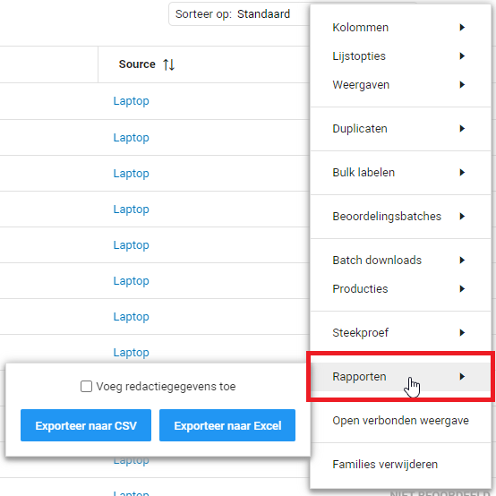

Dit is de aanbevolen werkwijze voor het maken van de inventarislijst binnen ZyLAB ONE. Met deze functie is het mogelijk om een snel overzicht te creëren van uitgevoerde werkzaamheden of de status van documenten in een dataset of in een geselecteerde groep documenten.
Het maken van een inventarislijst kan op twee manieren:
In deze aanbevolen werkwijze zullen we ons richten op de inventarislijsten vanaf de documentenlijst. Vanaf de documentenlijst kunnen er inventarislijsten gemaakt worden met verschillende voorkeuren. Zo kan er een inventarislijst gemaakt worden van alle documenten in de documentenlijst door geen zoekopdracht aan te geven. Er kunnen ook inventarislijsten gemaakt worden van alle documenten met bepaalde labels of binnen bepaalde velden. Dit kan door een zoekopdracht in te voeren.
De inventarislijst wordt ook gebaseerd op de kolommen die u op dat moment in de documentenlijst hebt staan. Zie de aanbevolen werkwijze Eigen weergave om de documentlijst naar uw voorkeur te categoriseren. Zo krijgt u de juiste kolommen in uw inventarislijst. Wanneer u klaar bent om de inventarislijst te maken, kunt u dit bij het tandwiel doen. Hier klikt u op “Rapporten”, waar twee opties opkomen.

Maak een keuze en laat optioneel de redactieinformatie op gedetailleerde of samengevatte wijze toevoegen aan de inventarislijst. Let op: indien u werkzaam bent op een apple computer, wordt de inventarislijst in CSV-vorm automatisch gedownload in de functie ‘Numbers’.

De inventarislijst wordt nu direct gedownload en kan worden gevonden in het “Downloads” mapje van uw computer.